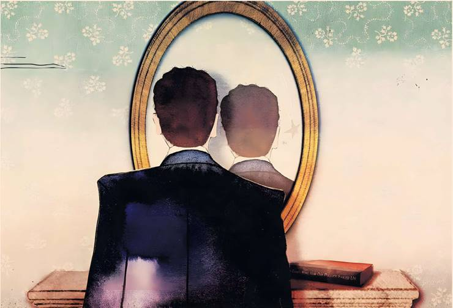

Edward Luce

The laws of hydraulics are broken. Donald Trump’s approval ratings have dropped to second-term lows yet the Democratic party’s have fallen even further. They ought to be soaring. Just a third of Americans approve of them. Much the same can be said of centrist and centre-left parties across the west. The odd one out is Canada. That is because Mark Carney’s Liberal party is the staunchest defender of Canada’s sovereignty — the opposition having been too cosy with Trump. But Canada is the exception that proves the rule. Western liberalism is still on the retreat.
Where liberal democratic parties are in power, normal hydraulics still work. A year after taking office, Sir Keir Starmer’s Labour is lucky to poll at 25 per cent. Nigel Farage’s seven-year-old populist Reform party is meanwhile attracting almost a third of voters. Less than three months after taking office, Germany's two big parties are neck and neck with far right Alternative for Germany. This is in spite (or maybe because) of the fact that German intelligence recently branded AfD as rightwing extremist.
In France, Marine Le Pen’s far right Rassemblement National likewise polls streets ahead of the other parties in spite of Le Pen having been debarred from running in the next presidential election.
Of the major European nations, Italy’s hard right Giorgia Meloni has the highest approval rating. Even Trump, who is sinking into a self-created doldrum, has his head above water. His recent 37 per cent Gallup rating is well above the Democratic party. When the left is in office, populists make hay. When the right holds power, the left rarely do. For further evidence, see Benjamin Netanyahu's Israel and Narendra Modi’s India.
That there are multiple causes of western liberalism’s malaise makes it harder to fix. Complexity encourages infighting. Long after Taylor Swift hits retirement age, Democrats will still be arguing over whether Joe Biden was too old to run, or too selfish to step down sooner. They might also still be debating whether the left is too woke or not woke enough. Can the left in office do more to improve the economy for the blue-collar classes? Does immigration enrich society or further squeeze the working class? Should there be a wealth tax? Is Israel committing war crimes? Such questions reliably divide.
Beyond the internal divisions, contemporary liberalism has two character defects that augur badly for its resurgence. The first is lack of conviction. It is all very well pointing out the dangers of Trump, Farage, Le Pen and others. It would be negligent not to. But making the negative case is not enough. “I might not be beautiful but have you seen that ugly person next to me?” said no winner of a beauty contest ever. “Stronger together”, “When we fight, we win” or campaign variations thereof do not mask the uncertainty beneath. As Bill Clinton once said, strong and wrong always beats weak and right. Focus groups cannot solve this.
Western liberalism’s second defect is intolerance.
American liberals were at their worst during the pandemic. That anti-vaxxer conservatives were even crazier should be no comfort. One day, it seemed, Dr Anthony Fauci was telling America that masks were not essential. The next, Rochelle Walensky, then head of the Centers for Disease Control was insisting that two-year-olds should be masked all day. Anyone entertaining the theory that the virus might have come from a Wuhan lab was dismissed as Sinophobic or worse. In December 2020, when vaccines became available, the Chicago Teachers Union tweeted, “The push to reopen schools is rooted in sexism, racism, and misogyny.”
Everyone could agree back then that otherwise liberal Sweden was foolish to take the herd immunity route. That Sweden ended up with one of the lowest mortality rates in Europe has not been similarly highlighted. Covid is not ancient history. Any survey probing why so many young voters are turning right that excludes their pandemic experience is wasting time. The road to recovery starts with looking in the mirror. The seminal book, In Covid’s Wake: How Our Politics Failed Us, by two Princeton scholars should be compulsory reading across the spectrum. That it has not been reviewed by most major newspapers is troubling.
As go social distancing rules, so goes free speech.
Liberals said, “Follow the science”, which confused science with faith. Science is a trial and error process that only works with openness to dissent. The same applies to political debate on campus, within newspapers, at think-tanks and society at large. To many younger voters, particularly men, today’s liberal establishment looks more like a conservative one. Educated elites confect orthodoxy on what we should say and do. The resemblance to high Victorianism is more than passing. Victorians regulated manners and etiquette. They also dreaded the mob. Expanding religions look for converts. Waning ones hunt down heretics. In form and content, western liberalism is dangerously close to the latter.
The good news is that liberalism has rebounded before after losing self-belief. The bad news is that it took a genocidal second world war to rediscover its necessity. Hoping that humanity is on a learning curve is not a strategy. The positive case for liberal democracy in today’s world is still waiting to be heard.
edward.luce@ft.com